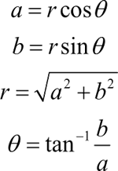

首页 > 编程笔记
MATLAB复数及其运算
复数对于数学本身的发展有着极其重要的意义，MATLAB 提供了丰富的复数函数用于复数运算。
当虚部等于 0（即 b=0），这个复数可以视为实数；当 z 的虚部不等于 0，实部等于 0（即 a=0 且 b≠0）时，z=bi，常称 z 为纯虚数。
【实例】显示复数。MATLAB 程序如下：
【实例】复数运算。MATLAB 程序如下：
这里，调用 abs 函数可直接得到复数的模。
【实例】复数求模运算。MATLAB程序如下：
【实例】复数求共轭运算。MATLAB 程序如下：
【实例】复数构造运算。MATLAB程序如下：
【实例】复数转换为实数运算。MATLAB 程序如下：
复数的表示
数学上把形如 a+bi（a, b 均为实数）的数称为复数。其中，a 称为实部（real part），记作 Rez=a；b 称为虚部（imaginary part），记作 Imz=b；i 称为虚数单位。当虚部等于 0（即 b=0），这个复数可以视为实数；当 z 的虚部不等于 0，实部等于 0（即 a=0 且 b≠0）时，z=bi，常称 z 为纯虚数。
【实例】显示复数。MATLAB 程序如下：
>> clear % 清除工作区的变量 >> 1+2i % 直接输入复数 ans = 1.0000 + 2.0000i >> 2-3i ans = 2.0000 - 3.0000i >> 5+6j ans = 5.0000 + 6.0000j >> 2i ans = 0.0000 + 2.0000i >> -3i ans = 0.0000 - 3.0000i
复数的基本元素函数
若存在复数 c1=a1+b1i 和复数 c2=a2+b2i，那么它们的加、减、乘、除运算定义为
c1+c2=(a1+a2)+(b1+b2)i
c1+c2=(a1-a2)+(b1-b2)i
c1xc2=(a1a2-b1b2)+(a1b2+b1a2)i
c1/c2=(a1a2+b1b2)/(a12+b22)+(b1a2-a1b2)/(a22+b22)i
【实例】复数运算。MATLAB 程序如下：
>> clear % 清除工作区的变量 >> A=1+2i; % 创建两个变量A和B，分别赋值为复数 >> B=3+5i; >> C=A+B % 复数相加 C = 4.0000 + 7.0000i >> C=A-B % 复数相减 C = -2.0000 - 3.0000i >> C=A*B % 复数相乘 C = -7.0000 +11.0000i >> C=A/B % 复数相除 C = 0.3824 + 0.0294iMATLAB 提供的复数基本函数及说明如下表所示。
| 名称 | 说明 | 名称 | 说明 |
|---|---|---|---|
| abs | 模 | complex | 用实部和虚部构造一个复数 |
| angle | 复数的相角 | conj | 复数的共轭 |
| imag | 复数的虚部 | real | 复数的实部 |
| unwrap | 调整矩阵元素的相位 | isreal | 判断是否为实数矩阵 |
| cplxpair | 把复数矩阵排列成复共轭对 |
复数的操作函数
1) 复数的模
除基本表示方式外，复数还有另一种表达方式，即极坐标表示方式，具体为z=a+bi =r∠θ
其中，r 代表复数 z 的模，θ 代表辐角。直角坐标中的 a,b 和极坐标 z,θ 之间的关系为：

这里，调用 abs 函数可直接得到复数的模。
【实例】复数求模运算。MATLAB程序如下：
>> clear % 清除工作区的变量
>> A=1+2i; % 创建变量A，赋值为复数
>> B=angle(A) % 求复数的幅角θ
B =
1.1071
>> C=abs(A) % 求复数的模
C =
2.2361
2) 复数的共轭
如果复数 c=a+bi，那么该复数的共轭复数为 d=a-bi。【实例】复数求共轭运算。MATLAB 程序如下：
>> clear % 清除工作区的变量
>> A=1+2i; % 创建变量A，赋值为复数
>> B=real(A) % 得到复数的实数部分
B =
1
>> C=imag(A) % 得到复数的虚数部分
C =
2
>> D=conj(A) % 得到复数的共轭复数
D =
1.0000 - 2.0000i
3) 构造复数
使用函数 complex(a,b) 可以构造复数；直接输入 a+bi 形式的数值，也可以得到复数。【实例】复数构造运算。MATLAB程序如下：
>> clear % 清除工作区的变量 >> complex(1,3) % 使用函数构造复数 ans = 1.0000 + 3.0000i >> 1+3i % 直接输入复数 ans = 1.0000 + 3.0000i
4) 实数矩阵
若复数矩阵中的元素的虚部均为0，即显示为c=a+bi
其中，b=0，可以简写为c=a
则该复数矩阵称为实数矩阵。调用 isreal(X) 函数显示结果为 1，反之显示为 0。单个复数视为单元素复数矩阵处理。【实例】复数转换为实数运算。MATLAB 程序如下：
>> clear % 清除工作区的变量
>> A=1+2i; % 创建变量A，赋值为复数
>> isreal(A) % 判断复数A是否为实数矩阵
ans =
logical
0
>> M=1 % 创建变量M，赋值为实数
M =
1
>> isreal(M) % 判断M是否为实数矩阵
ans =
logical
1
关注公众号「站长严长生」，在手机上阅读所有教程，随时随地都能学习。内含一款搜索神器，免费下载全网书籍和视频。

微信扫码关注公众号